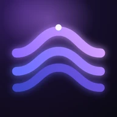
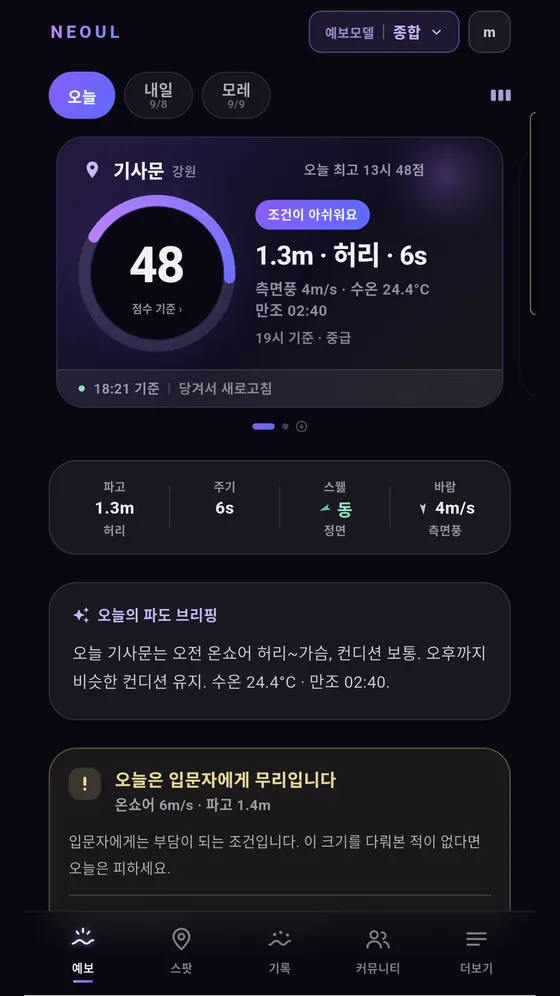
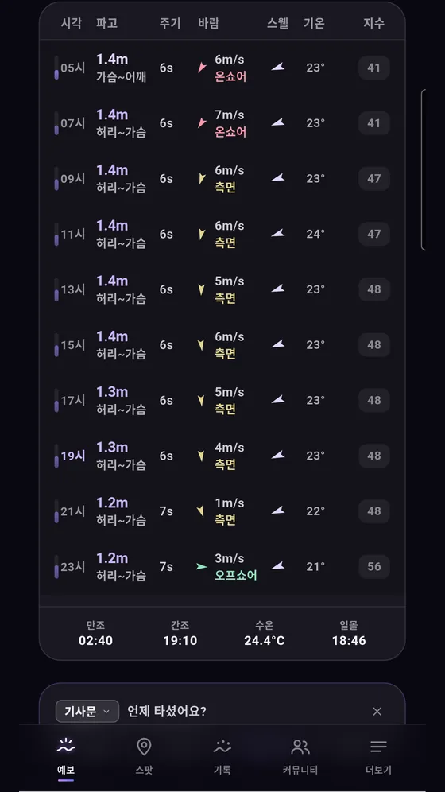
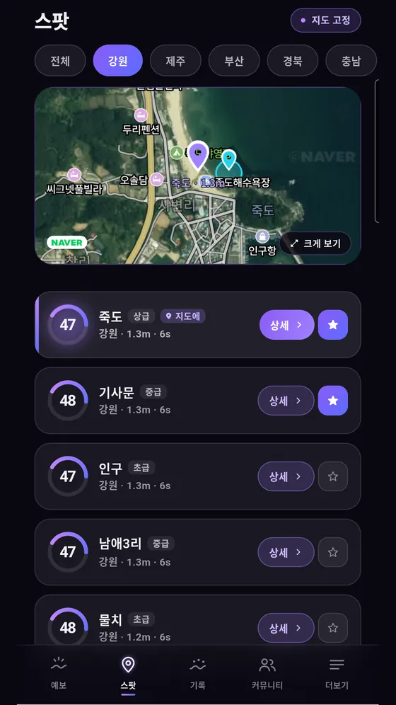
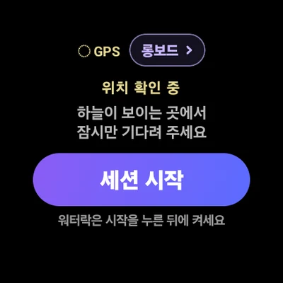
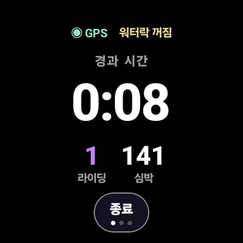
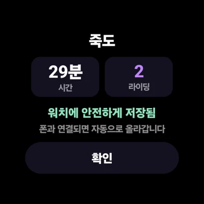
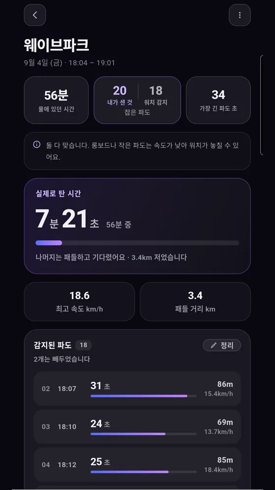
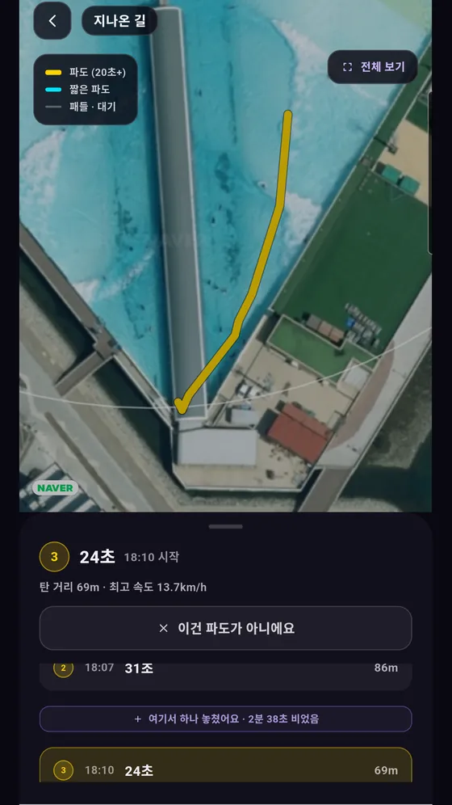

예보 모델 셋이 오늘의 점수를 매기고, 갤럭시 워치가 물속에서 파도를 셉니다. 폰은 차에 두고 들어가세요. 나오면 오늘이 지도 위에 있습니다.
동해 · 제주 · 남해 · 서해 14개 스팟 · 무료

서핑 점수
파고 · 주기 · 스웰 방향 · 바람. 넷이 25점씩 100점을 만듭니다. 점수를 누르면 무엇이 올리고 무엇이 깎았는지 항목별로 드러납니다. 숨긴 계산은 없습니다.
네 항목의 합100점
하나라도 낙제면 총점에 상한이 걸립니다. 서퍼들이 하는 말 그대로입니다 — “하나라도 꽝이면 못 탄다.” 파고가 완벽해도 온쇼어가 세면, 점수는 거기서 멈춥니다.
바다에 가기 전
예보 사이트 세 곳을 돌아다닐 필요가 없습니다. ECMWF · GFS · MFWAM 세 모델의 값을 한 화면에 받아오고, 기본은 셋의 중앙값입니다. 탭 한 번으로 모델을 바꿔 봅니다. 셋이 갈리는 날은, 그 차이가 곧 정보입니다.
죽도와 기사문은 같은 스웰을 다른 각도로 받습니다. 스팟마다 해안 방위를 두고 스웰이 얼마나 빗겨 들어오는지 계산합니다. 만조·간조, 수온, 일몰까지 한 표에.
진짜 질문은 ‘오늘’이 아니라 ‘몇 시’입니다. 파고·주기·바람·스웰·기온과 그 시각의 점수를 한 줄에.
주말 계획은 목요일에 세웁니다. 오늘·내일·모레를 같은 기준으로 나란히.

사람이 많다, 조류가 세다, 생각보다 크다. 모델은 절대 알려주지 않지만 그날의 판단을 바꾸는 것들 — 지금 그 바다에 있는 사람이 남깁니다. 바닥 지형·조류·입수 지점은 지도 위에 직접 찍습니다.
위험한 곳은 한 건만 올라와도 바로 표시합니다.
“여기로 들어가세요”는 세 명이 같은 곳을 가리켜야 표시합니다.
기준이 다른 이유는 하나입니다. 틀렸을 때 다치는 쪽이 다릅니다.

물에 들어가서
「세션 시작」 한 번. 물에 들어가기 전에 하는 일은 그게 전부입니다. 파도를 세고, 시간을 재고, 속도를 잡는 일은 손목 위의 GPS가 합니다. 물에서 워치를 들여다볼 일은 없습니다.



워치 Play 스토어에서 너울을 따로 받습니다. 폰 앱과 짝을 이뤄 동작합니다.
처음 가 본 해변이라도 기록은 됩니다. 이름은 나와서 붙이면 됩니다.
동의하지 않으면 수집하지 않습니다. 동의를 거두면 이미 기록된 심박도 지웁니다.
애플 워치는 향후 업데이트에서 지원할 예정입니다. 지금 자동 기록은 갤럭시 워치(Wear OS)에서만 됩니다. 아이폰에서도 예보 · 스팟 · 손으로 남기는 기록은 모두 쓸 수 있습니다.
물에서 나와서
물에 있던 한 시간과 파도 위에 있던 시간은 전혀 다른 숫자입니다. 그 차이가 그대로 남습니다. 파도 하나하나를 언제 · 몇 초 · 몇 미터 · 몇 km/h로 탔는지까지.
탄 파도는 노랗게, 저은 길은 회색으로, 되돌아간 길은 분홍으로. 어느 자리에서 잘 잡혔는지가 한눈에 보입니다.
시각·스팟·파도 수·별점·메모만 적으면 그 시간대의 파고·주기·바람이 자동으로 붙습니다. 좋았던 날의 조건이 남습니다.

놓치기도 하고, 파도가 아닌 것을 잡기도 합니다. 그래서 파도마다 빼거나 더할 수 있게 해 두었고, 그 답이 감지를 고치는 데 쓰입니다.
롱보드나 작은 파도는 속도가 낮아 워치가 놓칠 수 있습니다. 숨기지 않고 화면에 그대로 적어 둡니다.

데이터 출처
어떤 예보도 안전을 보장하지 않습니다. 예보는 예측값이며 실제 바다 상태와 다를 수 있습니다. 입수 판단은 반드시 현장에서 직접 하세요. 서핑 점수는 공식 기관의 지표가 아닙니다.
무료
들어갈지 말지, 왜 그런지, 그리고 실제로 어땠는지. 좋았던 날이 어떤 조건이었는지를 감이 아니라 숫자로 다시 봅니다.